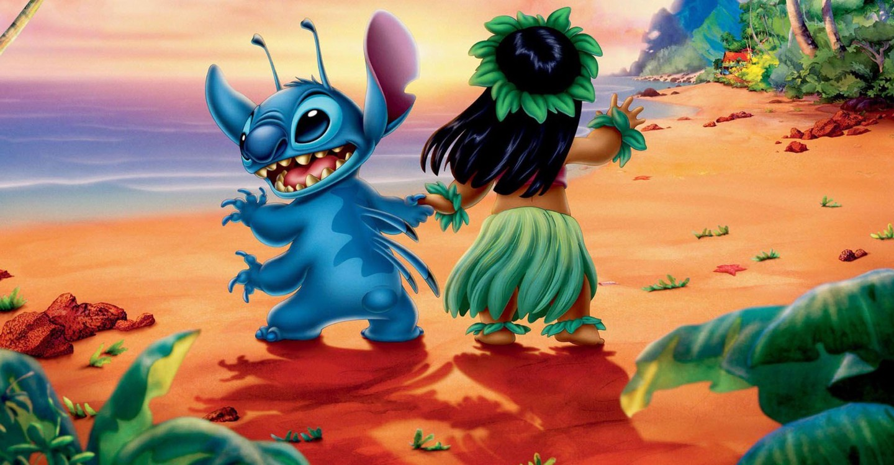

About Stitch
Stitch is a fictional character in Disney's Lilo & Stitch franchise. An illegally-made, genetically-engineered, extraterrestrial lifeform resembling a blue koala, he is one of the franchise's two title characters, alongside his adopter and best friend Lilo Pelekai, and its primary protagonist.
Stitch and Lilo
Stitch's characteristics
- He's a blue koala
- He used to be evil
- He loves Lilo
Stitch's friends
Stitch has some awesome friends. His best friend is Lilo. She's really kind. Click on the links below to read more about them.